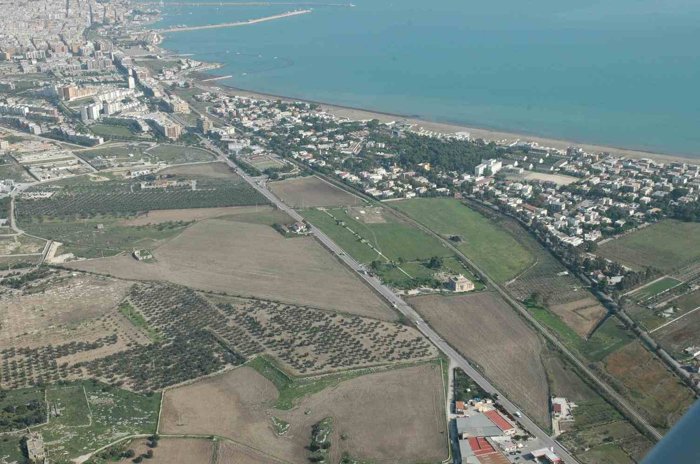
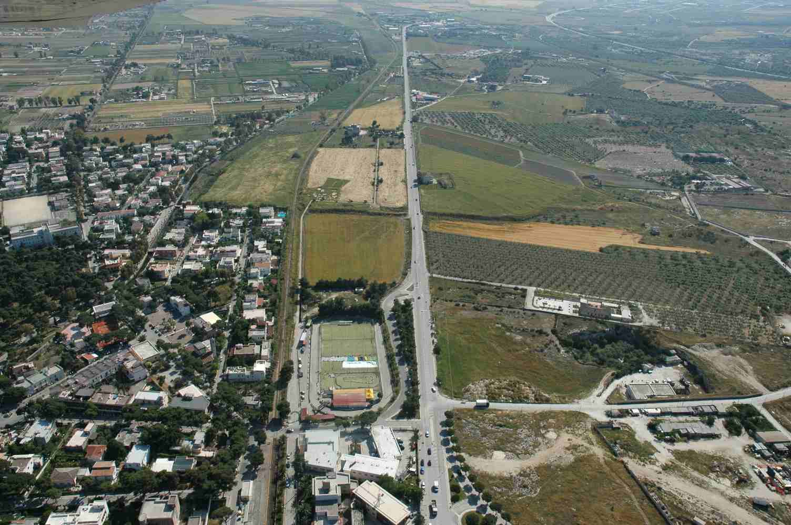
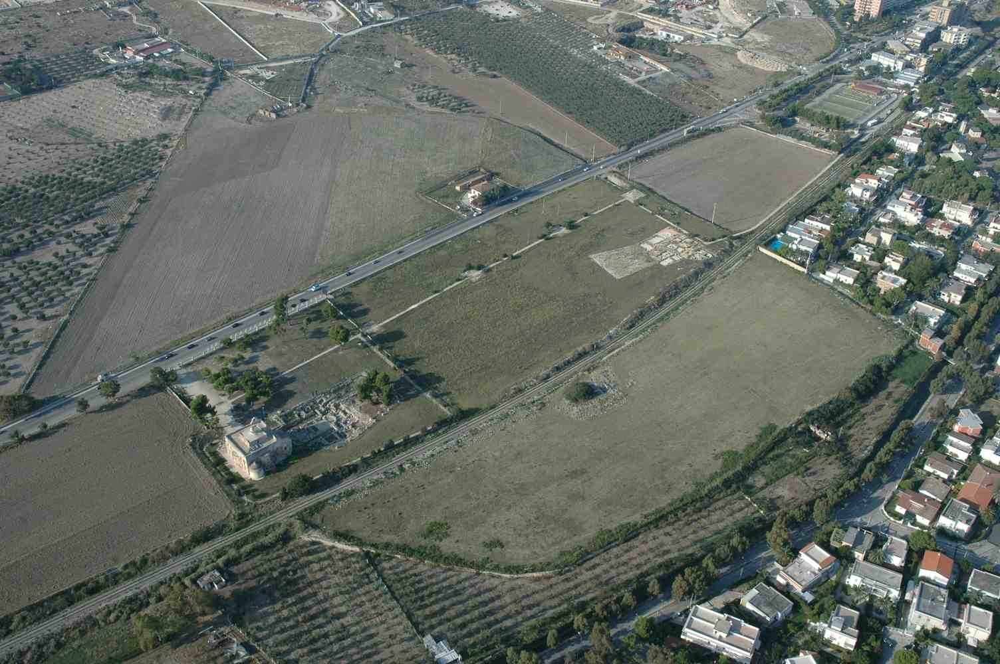
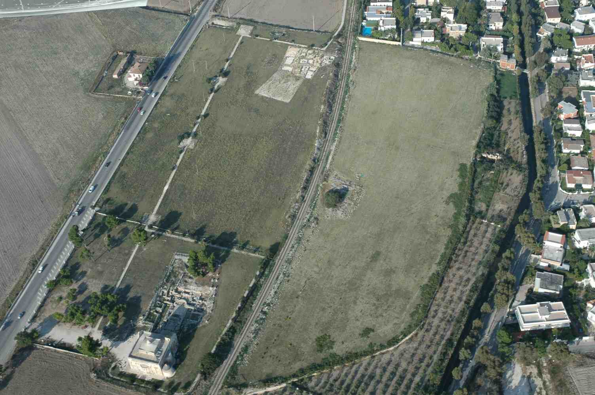
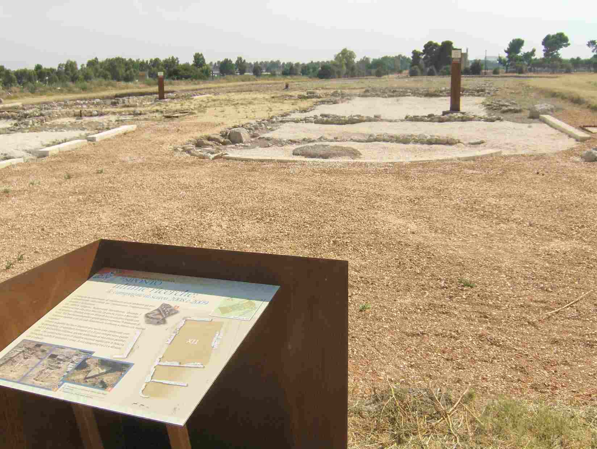
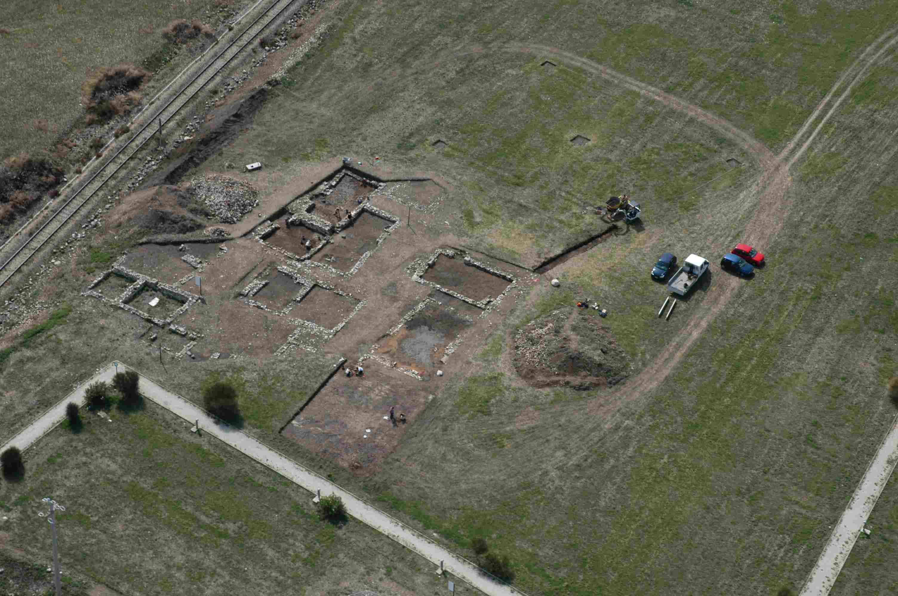
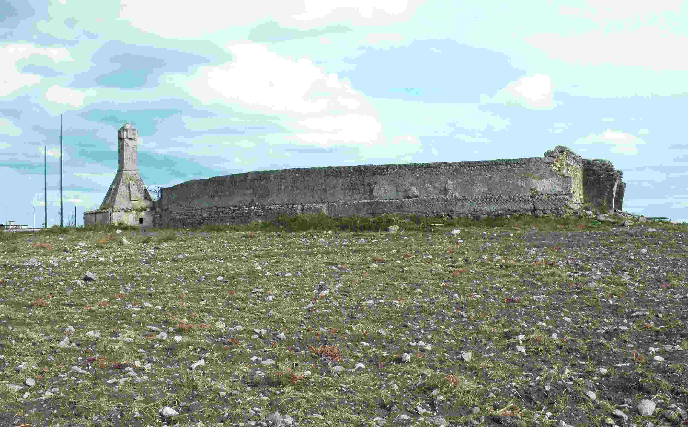
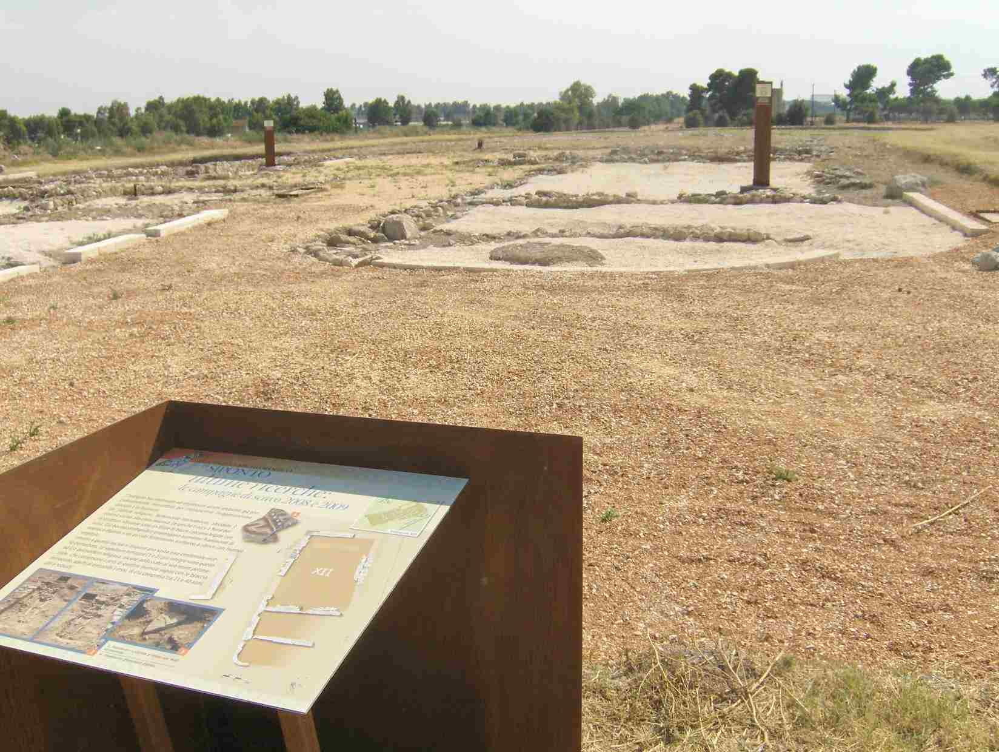

Esplora Siponto, antica città portuale sulla costa della Puglia settentrionale, abbandonata nel Medioevo dai suoi abitanti, poi trasferitisi nella nuova città di Manfredonia.

Siponto dall'alto
Veduta aerea del villaggio turistico di Siponto, del Parco Archeologico e del golfo di Manfredonia (Foto del LabTAF - Laboratorio di Topografia Antica e Fotogrammetria dell'Università del Salento).

Divisa
L'antica città di Siponto è tagliata da due infrastrutture moderne: la linea ferrovia garganica e l'ex Strada Statale 89 (Foto del LabTAF - Laboratorio di Topografia Antica e Fotogrammetria dell'Università del Salento).

Due scavi archeologici
L'area del Parco Archeologico: in primo piano la chiesa romanica di Santa Maria e l'attigua basilica paleocristiana, in alto a destra lo scavo di una porzione dell'abitato medievale e più a Nord le tracce dell'anfiteatro romano (Foto del LabTAF - Laboratorio di Topografia Antica e Fotogrammetria dell'Università del Salento).

Il parco archeologico
La chiesa romanica di Santa Maria.

La città medievale
La basilica paleocristiana.

La città medievale
L'abitato medievale a ridosso delle mura cittadine.

La città medievale
L'anfiteatro di età romana inglobato nella moderna masseria Grazia.

La città medievale
Il Parco Archeologico di Siponto, creato dalla Soprintendenza dei Beni Architettonici della Puglia nel 1996, è stato recentemente sistemato grazie all'intervento della Regione Puglia.
L'accesso al Parco Archeologico di Siponto è libero; per informazioni e visite guidate è possibile rivolgersi al Museo Archeologico Nazionale ubicato nel castello di Manfredonia.
Museo Archeologico Nazionale di Manfredonia
Castello di Manfredonia
Piazzale Ferri, 71043 Manfredonia, Italy
Tel: +39 0884587838
aperto dalle ore 8:30/13:30 alle 15.30/19.30 e chiuso il primo ed ultimo lunedì del mese.
A proposito di...
Questo progetto è stato realizzato dall'Associazione O.I.A., in collaborazione con la Cattedra di Archeologia Medievale dell'Università degli Studi di Bari Aldo Moro grazie al finanziamento della Regione Puglia -- Bollenti Spiriti 2010, utilizzando esclusivamente software libero, ed il codice sorgente del sito e dei relativi software sono disponibili su GitHub.